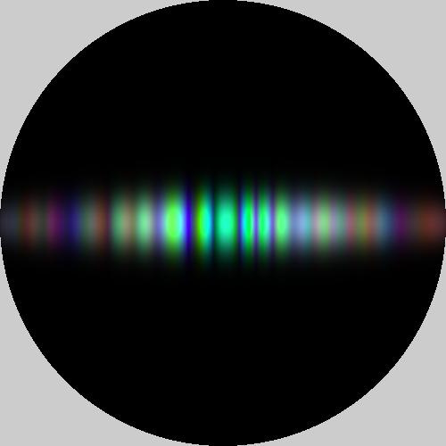
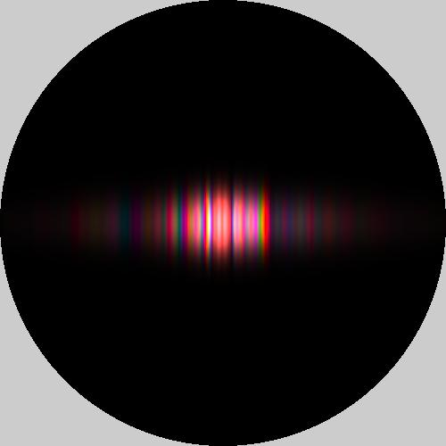
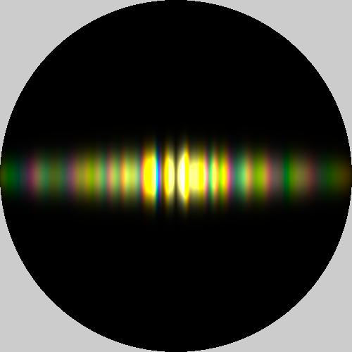

Appearance Modeling of Iridescent Feathers with Diverse Nanostructures
1Cornell University, 2NVIDIA
ACM Transactions on Graphics (SIGGRAPH Asia 2024)
{kind=link}
Rendered feathers of four common bird species, exhibiting iridescent structural color arising from a variety of nanoscale structures within the barbules. Our method starts with randomized procedural models of these structures, uses efficient wave simulations to predict BRDFs and statistical analysis to model spatial and angular irregularity, and results in efficient BRDF models that can be used in standard path tracers.
Abstract
Many animals exhibit structural colors, which are often iridescent, meaning that the perceived colors change with illumination conditions and viewing perspectives. Biological iridescence is usually caused by multilayers or other periodic structures in animal tissues, which selectively reflect light of certain wavelengths and often result in a shiny appearance that almost always comes with spatially varying highlights, thanks to randomness and irregularities in the structures. Previous models for biological iridescence tend to each target one specific structure, and most models only compute large-area averages, overlooking spatial variation in iridescent appearance.
In this work, we build appearance models for biological iridescence using bird feathers as our case study, investigating different types of feathers with a variety of structural coloration mechanisms. We propose an approximate wave simulation method that takes advantage of quasi-regular structures while efficiently modeling the effects of natural structural irregularities. We further propose a method to distill our simulation results into distributions of BRDFs, generated using noise functions, that preserve relevant statistical properties of the simulated BRDFs. This allows us to model the spatially varying, glittery appearance commonly seen on feathers. Our BRDFs are practical and efficient, and we present renderings of multiple types of iridescent feathers with comparisons to photographic images.
Fast Forward Video
Example BRDFs

instance 1
instance 1

instance 1
instance 1

instance 3

instance 3

peacock

instance 3
instance 3